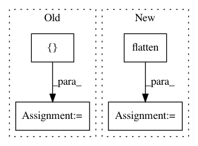

af461df627ef660d1a71b6981dedb4e4b504ba9a,txtgen/modules/connectors/connectors.py,StochasticConnector,_build,#StochasticConnector#Any#,256
Before Change
elif len(inputs) == 3:
input_mu, input_log_var, context = inputs
sample = sampler(input_mu, input_log_var)
output = tf.concat([sample, context], axis=1)
else:
raise ValueError("Gaussian connector supports either "
"(mu, logvar) or (mu, logvar, context)")
After Change
try:
nest.assert_same_structure(inputs, self._decoder_state_size)
except (ValueError, TypeError):
flat_input = nest.flatten(inputs)
output = nest.pack_sequence_as(
self._decoder_state_size, flat_input)
self._add_internal_trainable_variables()
In pattern: SUPERPATTERN
Frequency: 4
Non-data size: 4
Instances
Project Name: asyml/texar
Commit Name: af461df627ef660d1a71b6981dedb4e4b504ba9a
Time: 2017-09-25
Author: junxianh2@gmail.com
File Name: txtgen/modules/connectors/connectors.py
Class Name: StochasticConnector
Method Name: _build
Project Name: keras-team/keras
Commit Name: a18932cb658c012808dd78bbd7f5bf1fe712e6c9
Time: 2016-01-15
Author: francois.chollet@gmail.com
File Name: examples/neural_style_transfer.py
Class Name:
Method Name:
Project Name: asyml/texar
Commit Name: 47c71c0524c7804863f2f4bcffdef5a873d84a55
Time: 2017-10-16
Author: junxianh2@gmail.com
File Name: txtgen/modules/connectors/connectors.py
Class Name:
Method Name: _mlp_transform
Project Name: ray-project/ray
Commit Name: 4633d81c390fd33d54aa62a5eb43fe104062bb41
Time: 2020-05-14
Author: krfricke@users.noreply.github.com
File Name: python/ray/tune/tests/test_experiment_analysis_mem.py
Class Name: ExperimentAnalysisInMemorySuite
Method Name: testCompareTrials